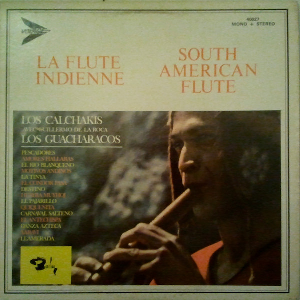

LP
La Flûte Indienne - South American Flute
Los Calchakis Avec Guillermo de la Roca / Los Guacharacos
Media: — · Sleeve: —
—
Personal
Discogs SuggestedCA$21.59
Discogs MedianCA$21.59
Discogs HighCA$21.59
- Physical Copy ID
- BB-LP-193
- Year
- —
- Label
- Barclay
- Catalog #
- 40027
- Country
- CACanada
- Genre / Style
- Latin · Quechua